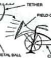

Research Coordinator: TAMU Institute for Applied Creativity
 tamu.edu, (979) 845-2509,
tamu.edu, (979) 845-2509,
I was the first cognitive psychologist at Texas A&M University,
arriving in 1980, and I have built the cognitive psychology area, both
in terms of students (we now have a Ph.D. program) and faculty (we now
have seven faculty in the cognitive area). I have also had a founding
and continuing role in
ARMADILLO, the cognitive psychology society of
Texas and the Southwest since 1990. With my colleagues
Tom Ward and
Ron Finke, I helped define the creative cognition paradigm, an
approach to the studies of both cognitive science and creativity. I am
the Coordinator of Research for the Texas A&M University Institute for
Applied Creativity, an interdisciplinary entity that encourages,
supports, and oversees work in creative studies. I continue to work on interdisciplinary research projects with mechanical engineers, business school researchers, and computer scientists.
I have developed methods for examining aspects of the creative process in laboratory research, and results on blocked, recovered, and false memories. My experimental work on context-dependent memory influenced techniques that are used forensically to enhance eyewitness memory. My interdisciplinary work connects creative cognition to activities in engineering design, business, and computer science.